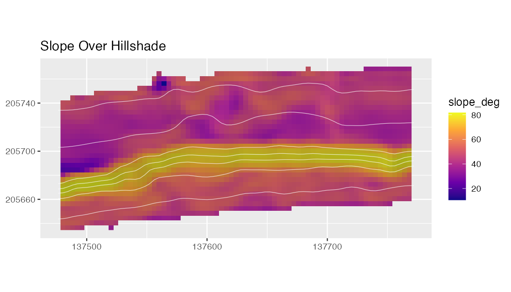
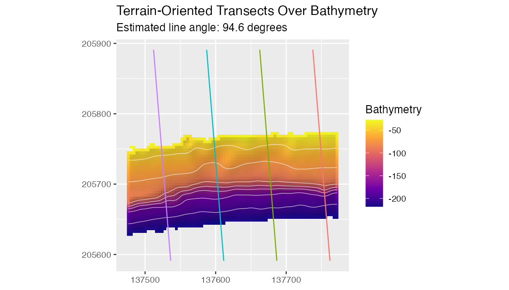
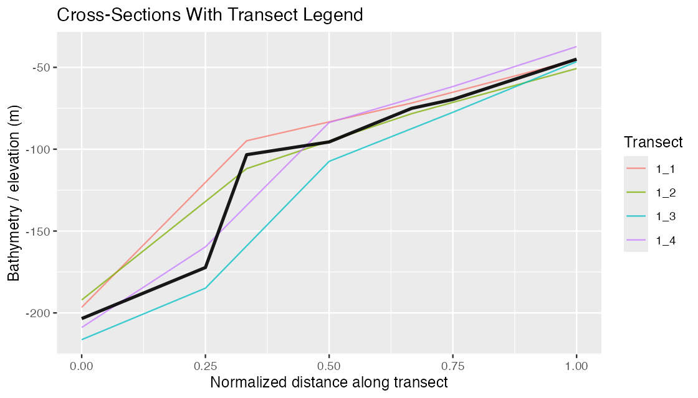
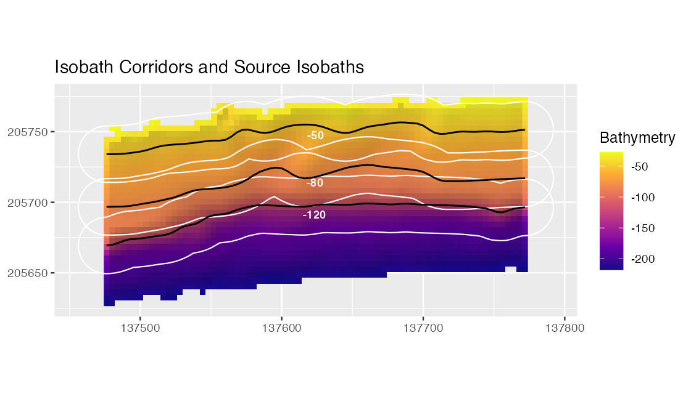
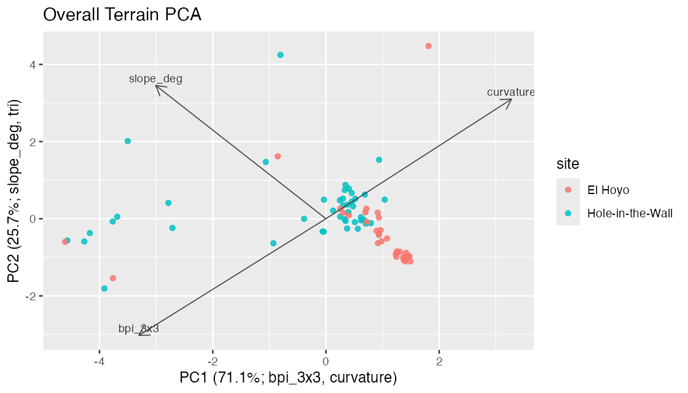

The visual proof is a compact gallery from the package QA run. It shows that the site examples are built from real reduced bathymetry, that hillshade-supported maps render with vector overlays, and that profile and modeling outputs use the intended raster value columns.
The full QA report is kept in
qa/visual-proof/visual-proof.md in the source repository.
The CRAN source package excludes the QA directory, so only selected
small figures are copied into package figure assets for
documentation.
Terrain Metrics

Slope over hillshaded Hole-in-the-Wall bathymetry. The figure demonstrates that metric maps can use bathymetry-derived hillshade and contours as visual context while preserving the metric as the mapped value.
Transects

Transects are oriented from local surface aspect and plotted over
the prepared bathymetry. The line angle and
orientation_resultant_length are recorded in the transect
attributes; a low resultant length signals an unstable automatic mean
direction.
Cross-Sections

Cross-section profiles use bathy_m explicitly on the
y-axis. Numeric metadata such as transect width, height, offset, and
angle are ignored during automatic value-column inference.
Isobath Corridors

Isobath corridors are shown with the source isobaths in black. The black lines mark the depth horizons that were buffered to create independent extraction corridors; overlapping corridor summaries are not mutually exclusive.
PCA

PCA scores retain site metadata and the axis labels report dominant loading directions. This makes exploratory terrain separation easier to inspect before formal modeling.
Local QA Summary
The local validation pass for this site recorded:
- pkgdown build: completed locally
- R CMD check: 0 errors, 0 warnings
- source package size: below 9 MB
- expected website URL: https://el-cordero.github.io/blueterra/
- deployment workflow:
.github/workflows/pkgdown.yaml
GitHub Actions results are available from the repository Actions tab: https://github.com/el-cordero/blueterra/actions.